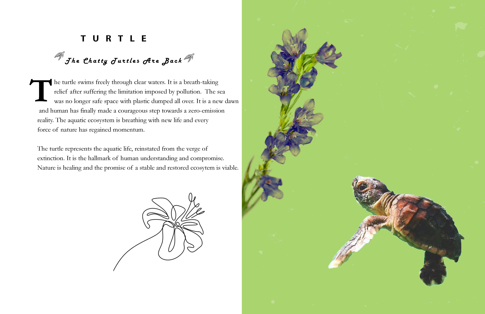
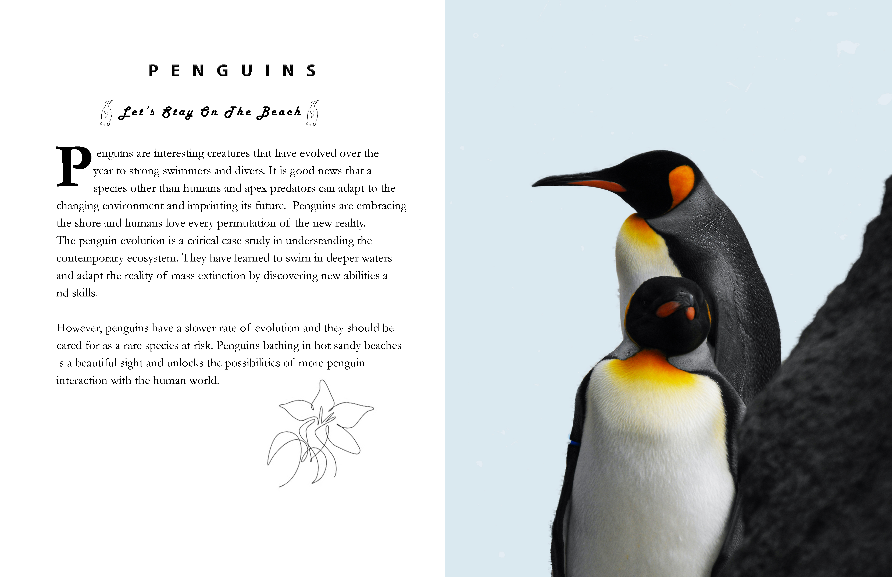
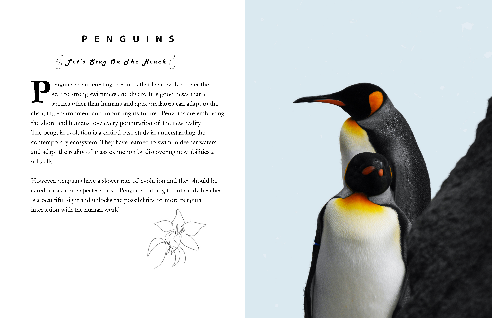

Welcome to the Go Green Campaign

 

About Go Green
Go Green Company is a movement dedicated to fighting the use of plastics worldwide and achieving the reality of an environmentally conscious society. By working with like-minded agencies, institutions, and businesses globally, the company relies on scientific data to invent solutions and champion a course toward sustainable solutions and alternatives to plastics. The main objective is to transform the popular opinion on the use of plastic and promote alternative solutions championing a population willing and ready to fight against plastic .
Goals
• To reduce reliance on single-use plastics • To educate society on the dangers of plastic waste • To motivate businesses, institutions, consumers, and communities to eliminate plastics • To promote eco-friendly alternative solutions such as stainless steel, paper, and glass .
About the Campaign
The campaign is structured as an engaging discussion on plastic use and other eco-friendly alternatives. The idea is Inform, educate, engage, counter, and build a massive conversation that will discourage the overreliance on plastic. Engagement is crucial, and given the structured and systemic nature of the government and corporate system, the approach is meant to make sure and progressive steps towards environmental sustainability .